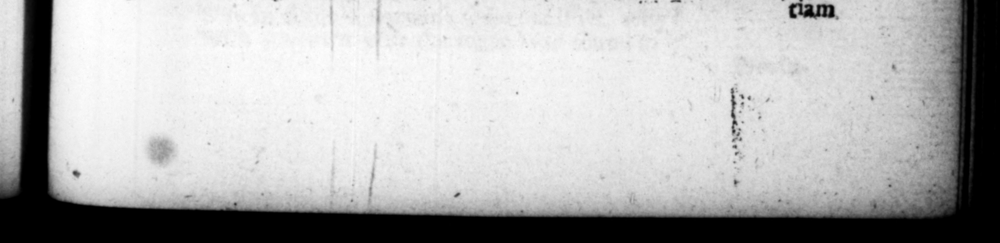

A — I OO EEAAT BST TREES. SLATES ow ref Sad dhe. pes. > Zihnd iherno. etiam ante lucem cape reconſyeverat, inter cxnam vero uſque eo. abundantem, ut congeſtas ſu. per. one n Fea; qu fr Mads Mane mares pronior : eos | non nifi Os ast Tel Fere in Hiſpania lum e — cancubi. de Neronis exitu ngcation” non modo ar&tiſli. ny oſculis palam exceprum eo, ſed ut line mora 2 tur oratum, atque fedeem. * periit tertio & ſeptuagel imo xtatis anno, Imperii menſe ſeptimo. Senatus, ut primum licicum fuit, ſtauuam ei decreverat roſtratæ colum_ nz ſuperſtantem, in parte Fori, qua trucidatus et. Sed — nO nus abolevit, perocuſſores ſibi ex Hiſpama in Judæam ſub natus, a before company, but mifille Opt» M0 vis FEE Pao | 299 22. Cibi plarimi cradicur, EY quem tempore h wid to have been a 2 took hu bre 45 of winter ame aft 8 day. And at wad Fre ofthe : rg: that he ive 0 1 1 elicks plate s 17 be Kd 4 22 He . was in bis mere — to the male-ſex, and ſuch of them ton 4 were their prime for that vile ſervice, tell you that in 2 when Ice/us an old catamite of hs brought h m the ni'ws of Wero's death, he not only kiſſed vim beartily F bim to „ ant then” took make 'a clear coafl bim aſide. * m into a private room. He his Bfe in the third neg his * and the ſeve h of 11 reien. The ſenate, as 12 as it was ſafe from them ſo to do, ordered a flarue to be ere ted him ubon the pillar called Roſtrata, in that part of the forum, where be w. 2 But 8.2 an cancelled that uſpicion that be had r CG: VET. TRANQU ILLT 5 M. SALVIUS OTHO. * K* K. eee 1 1 opp1 eren · AS tino, familia vetere & honorata, —_ ex 8 Etruriæ. VIII. CAP U PD I, (93:63 HE enceſtors of Otho were ors. 8 Tr 8 Cinally of the town of Feren« tum, - 8 and (933 99) bonour » and indeed one of the mos able in Etruri4. 2. W M. Sal vius Avus M. Salvius Otho, patre equite R. matre humili, ingertum an Ingen, . graOtho, whoſe father mas a Roman knight, but his mother of mean extract iam, for clam.
